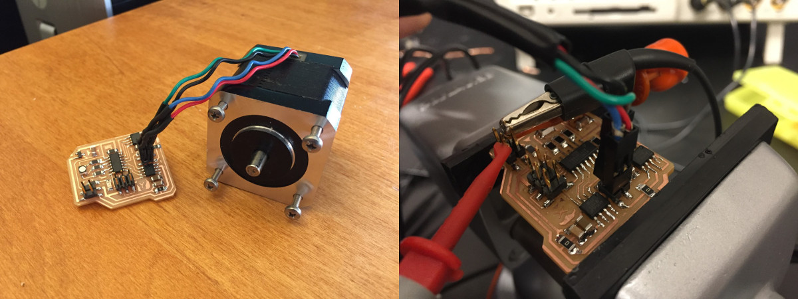
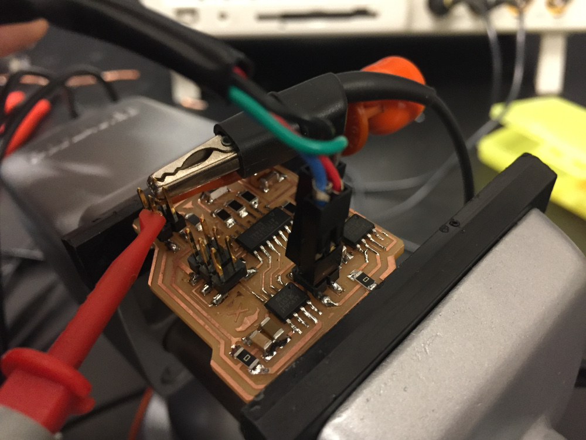

Custom Stepper Motor Driver Board
Eagle 7.7 | ShopBot Desktop | C Programming | AVRDUDE
Completed as part of 4.140 (MIT Graduate-Level Class), November 2016

Designing the motor driver in Eagle
This week I got to complete real progress toward my milling machine project which I am delighted about. My final project will be a PCB milling machine and in order to have precise control over the toolpath, it is essential that stepper motors drive positioning of the bit on the X, Y, and Z axes. I began by taking the template design for a motor driver board and adding a power LED and status RGB LED to it so I could use it more effectively in my milling machine.

This is the most complex circuit I've design thus far and I decided to do everything I could to fit it into as small a space as possible. The spec for this particular motor (Found on Pololu at this link) says that its maximum current draw is 1A. I had to carefully choose the trace width on my board to make sure I didn't have any heat dissipation problems with that much current. Assuming a copper depth of 0.1mm, the minimum trace size to carry 1A is 10.8mil. To be safe, I set most of my high current traces at 24mil width.
I had some difficult routing all the traces especially with needing to route VREG (5V), VRAW (9V), and GND (0V) to both the H bridge chips. Ultimately, I had to use two 0 ohm jumpers which wasn't the worst thing in the world. It did make my board stick out a little bit on the right side, but that's not too bad.
I set up to mill the boards and I realized that the Harvard section was running out of copper boards. Also, conveniently, the size of my board was just right so that I could fit two of them on one board. Since I was very confident in my design, I decided to just go ahead and mill two boards at the same time. I did the traces for the first board, zeroed the y axis to exactly 1.300 inches above the original y, then did the traces for the second board.
In addition, I added a small X and a small Y to each board in order to tell them apart. Since I would have needed a 3rd board anyways to do the Z axis, I decided to just make two additional boards giving me four in total. The boards were labeled X, Y, Z, and CA (which stands for Cameron Akker) allowing me to have one backup board if one of the others broke.
Soldering (stuffing) the boards
Soldering the boards took a lifetime and a half. By my count, each board had 6 resistors, 4 capacitors, 3 ICs, 2 LEDs (one RGB), 3 connectors, and one regulator. Multiply all of that by 4, carry the one, and you'll see I made about 200 solder connections to finish all the boards.
The bad news was that it took an hour, but the good news is that all of the connections turned out well. I laid out my boards well and I could tell just by looking at the board if there were any issues with the soldering. As far as I know, there are no bad connections.
Programming and Testing the Boards
I used avrdude on a Linux VM to program the board - a thorough documentation of the process can be found in my week 7 page. Since my board did not vary significantly from the template board other than the inclusion of status indicator LEDs, I could implement the code without modifying it too heavily.
Once the board was all programmed and hooked up, I ran into a pretty confounding problem. The ATtiny44 was outputting PWM signals to the motor driver chips, but the output to the motors was just a flat 5V signal. After fiddling with it for an hour and checking that all the pins were tied correctly, I sent an email to Rob describing the problem. He told me that the H bridge chips need to run at at least 8V in order to work. I was a little concerned because the motors were spec'ed for 2.7V, but he assured me it wasn't a problem. I switched from a 5V supply to the bench variable power supply at 9.4V and the stepper motor began to wiggle.

I cycled through all four boards that I had made and I was delighted to find that every single one could drive the stepper motor without a problem.
I'm glad I made all three required boards this week because next week, I can do the interface programming that allows them all to talk to one another. The electrical part of my final project is coming together!